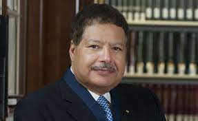
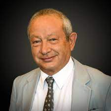
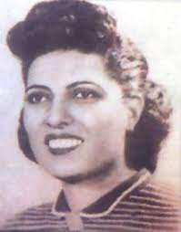
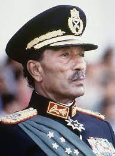
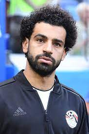

الشخصيات المصرية التي نقشت اسمهت في كتب التاريخ لأعمالها العظيمة
أحمد زويل

أحمد حسن زويل هو عالم كيميائي مصري أمريكي
حاصل على جائزة نوبل في الكيمياء لسنة 1999 لأبحاثه في مجال كيمياء الفيمتو
إذ اخترع ميكروسكوب يُصوِّر أشعة الليزر في زمن مقداره فمتوثانية
وهكذا يمكن رؤية الجزيئات أثناء التفاعلات الكيميائية، ويُعدُّ هو رائد علم كيمياء الفيمتو
ولقب بـ«أبى كيمياء الفيمتو»، وهو أستاذ الكيمياء وأستاذ الفيزياء في معهد كاليفورنيا للتقنية
.و توفي في عام 2016
نشر أكثر من 350 بحثا علميا في المجلات العلمية العالمية المتخصصة مثل: مجلة ساينس ومجلة نيتشر
رد اسمه في قائمة الشرف بالولايات المتحدة التي تضم أهم الشخصيات التي ساهمت في النهضة الأمريكية
وجاء اسمه رقم 9 من بين 29 شخصية بارزة باعتباره أهم علماء الليزر في الولايات المتحدة
نجيب ساويرس

نجيب أنسي ساويرس (17 يونيو 1955 في محافظة سوهاج مركز طهطا)
وهوه أحد أكبر رجال الأعمال المصريين رئيس مجلس إدارة شركة أوراسكوم للاستثمار القابضة
.نجب أنسى ساويرس مؤسس مجموعة أوراسكوم
.نجل أنسي ساويرس مؤسس مجموعة أوراسكوم الأم المتعددة النشاطات
حصل علىٰ بكالوريوس الهندسة الميكانيكية
.وماجستير في علوم الإدارة التقنية من المعهد الفيدرالي للتكنولوجيا في سويسرا
أطلق قناة أو تي في التي افتُتحت في 31 يناير 2007 وقناة أون تي
.في التي افتُتحت في 6 أكتوبر 2008
مساهم في جريدة المصري اليوم، قدرت مجلة فوربس سنة 2015 أن ثروته تبلغ 3.4 مليار دولار، وترتيبه
رقم 577 في قائمة أغنى أغنياء العالم حيث يحتل المرتبةَ الرابعةَ في مصر.
.تبرع نجيب وعائلته لصندوق تحيا مصر بمبلغ ثلاثة مليارات جنيه مصري
سميرة موسى

سميرة موسي (3 مارس 1917 - 15 أغسطس 1952 م) ولدت في قرية سنبو الكبرى
مركز زفتى بمحافظة الغربية
وهي أول عالمة ذرة مصرية ولقبت باسم ميس كوري الشرق
وهي أول معيدة في كلية العلوم بجامعة فؤاد الأول، جامعة القاهرة حاليا
حصلت سميرة موسي علي بكالوريوس العلوم وكانت الأولي علي دفعتها وعينت كمعيدة بكلية العلوم
وذلك بفضل جهود د.مصطفي مشرفة الذي دافع عن تعيينها بشدة
وتجاهل احتجاجات الأساتذة الأجانب الإنجليز
أنور السادات

محمد أنور السادات (25 ديسمبر 1918 – 6 أكتوبر 1981)
كان سياسيًا وضابطًا عسكريًا مصريًا
شغل منصب الرئيس الثالث لجمهورية مصر العربية من 15 أكتوبر 1970
حتى اغتياله على يد ضباط جيش متشددين في 6 أكتوبر 1981
كان السادات عضوًا كبيرًا في الضباط الأحرار الذين أطاحوا بالملك فاروق في ثورة 23 يوليو
وكان مقربًا جدًا من الرئيس جمال عبد الناصر
حيث خدم كنائب للرئيس مرتين وخلفه كرئيس في عام 1970. في عام 1978
وقع السادات ومناحم بيجن، رئيس وزراء إسرائيل
تفاقية سلام بالتعاون مع الرئيس الأمريكي جيمي كارتر
وتم تكريمهما بجائزة نوبل للسلام بسبب ذلك
محمد صلاح

محمد صلاح حامد محروس غالي (مواليد 15 يونيو 1992) هو لاعب كرة قدم مصري
يلعب في مركز الجناح الأيمن مع نادي ليفربول في الدوري الإنجليزي الممتاز ومنتخب مصر
يُعد أحد أبرز اللاعبين العرب والأفارقة،
حيث حصد العديد من الجوائز أبرزها جائزة أفضل لاعب في إنجلترا 2018
20جائزة هدف الموسم في الدوري الإنجليزي الممتاز لموسم 2017–18
وجائزة أفضل لاعب أفريقي لعامي 2017 و2018
جائزة أفضل لاعب أفريقي بواسطة البي بي سي لعامي 2017 و 2018
وأفضل لاعب في الدوري الإنجليزي لعام 2018
وجائزة الحذاء الذهبي في الدوري الإنجليزي الممتاز
(هداف الدوري الإنجليزي الممتاز) أعوام 2018، 2019 و2022
اختير من قبل مجلة تايم الأمريكية في عام 2019 ضمن أكثر 100 شخصية تأثيرًا في العالم